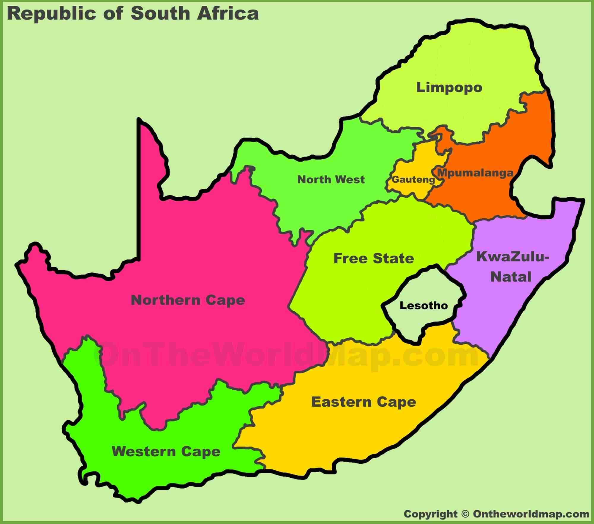

Thandile Mayekiso
My name is Thandile Mayekiso I am a proud South African. I am married with 2 beautiful daughters.
I work at an automotive company that makes Mercedes Benz Doors and I am an Operator there.
I love learning and I have enrolled in BYU to get my degree so I can get a better job plus I love
Learning about the funtions of a computer and having a deep interest in Web development.
I hope to acheve my goals to I can serve as a motivation for others to seek higher learning.

South African Landscape and the Rich history
South Africa's history is as rich and diverse as its landscape. The country has been shaped by centuries of indigenous cultures, colonial rule, and struggle for freedom and equality.
Some key highlights in South Africa’s rich history include:
- Pre-Colonial Period: South Africa was home to various indigenous groups, such as the Khoi, San, Zulu, and Xhosa, each with their own traditions, languages, and cultures.
- Colonial History: The Dutch first arrived in 1652, establishing a refreshment station at the Cape of Good Hope. British colonial rule followed, leading to tensions with the indigenous populations and the Dutch settlers, known as Afrikaners.
- Apartheid Era: The institutionalized system of racial segregation, starting in 1948, severely oppressed the black majority. Nelson Mandela and many others fought against this regime, leading to its eventual dismantling in 1994.
- Modern South Africa: Today, South Africa is a vibrant, multi-ethnic democracy, with rich cultural diversity and a growing economy, though challenges remain.